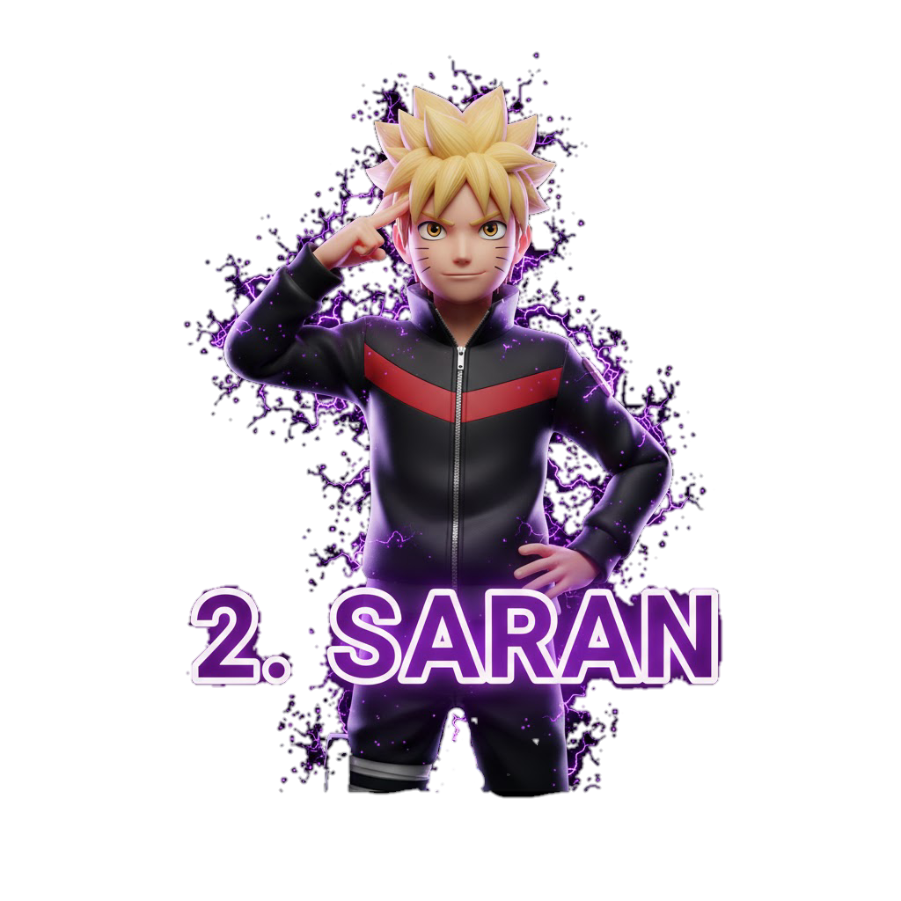

Nama: [Dona Ardi Pratama ] [0087687365]
Assalamu’alaikum wr. Puji syukur kami panjatkan kepada tuhan yang maha esa allah swt karena rahmat dan karunia nya sehingga penulis dapat menyusun makalah yang berjudul pengunaan handphone terhadap pelajar Tujuan dari pembuatan makalah ini adalah sebagai bahan untuk memenuhi tugas informatika karena keterbatasan pengetahuan maupun pengalaman kami , kami yakin masih banyak kekurangan dalam makalah ini, oleh karena itu kami sangat mengharapkan saran dan kritik yang membangun dari pembaca demi kesempurnaan makalah ini, akhir kata kami ucapkan terimakasih wassalamualaikum wr. Wb
Dunia pelajar saat ini tidak bisa terlepas dari teknologi komunikasi,khususnya handphone. Awalnya, handphone hanya dimiliki oleh kalangan tertentu yang benar benar membutuhkannya demi kelancaran pekerjaan mereka namun seiring perkembangan zaman,handphone telah dimiliki oleh semua kalangan baik yang benar benar amembutuhkan maupun yang kurang membutuhkan tidak terkecuali para pelajar. Kini handphone bukan lagi sekedar alat berkomunikasi tetapi handphone juga merupakan alat untuk mencipta dan menghibur dengan suara,tulisan,gambar,dan video.para pelajar sekarang berlomba lomba untuk memiliki handphone karena handphone bukan hanya alat berkomunikasi, namun di kalangan pelajar handphone sekaligus sebagai gaya hidup.
Telepon genggam atau yang disebut handphone adalah sebuah perangkat telekomunikasi elektronik yang memiliki kemampuan dasar yang sama dengan telepon fixed line, sehingga konvesional.Handphone dapat dibawa kemana mana (portable) dan tidak perlu disambungkan dengan jaringan telepon menggunakan kabel (nirkabel,wireless)
Pelajar jaman sekarang sudah tidak asing lagi dengan handphone. Mereka menggunakan handphone untuk berkomunikasi , game ,mendengarkan music dan melihat gambar ataupun video.alasan pelajar selalu menggunakan handphone dalam aktivitasnya adalah handphone merupakan alat berkomunikasi maupun alat mencari informasi yang paling mudah , praktis, dan dapat cepat. Manfaat handphone bagi pelajar adalah untuk mempermudah komunikasi,mendapatkan informasi, mencari hiburan serta mempermudah dalam mengerjakan tugas sekolah Handphone telah menjadi bagian dari kehidupan pelajar, sehingga keberadaan handphone menyebabkan adanya dampak positif maupun negatif dampak positif dari handphone adalah mempermudah dalam mencari informasi komunikasi selain itu dapat menjadikan pelajar tidak gagap teknologi. Adapun dampak negatifnya, yaitu menggangu belajar siswa, berakibat buruk
